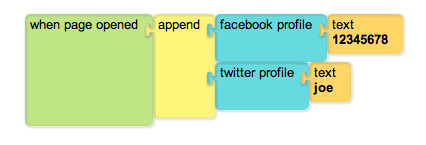

Get Started
This module implements a simple App store to help you create and share Tuscany apps.
The user interface is minimalistic, by design.
Works with Safari, Chrome and Firefox. Doesn't work with IE.